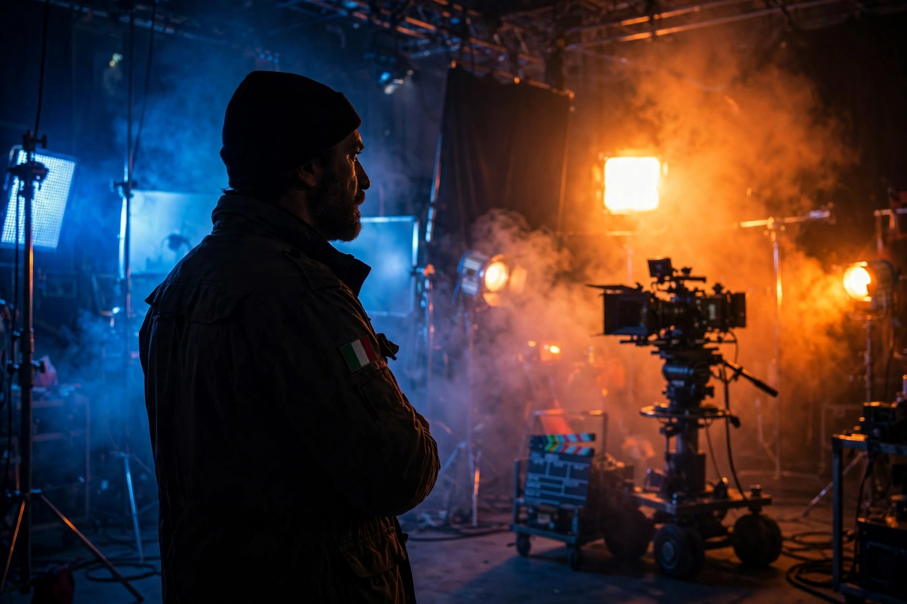

| Vittorio Storaro | |
| Born | June 24, 1940, Rome, Italy |
|---|---|
| Occupation | Cinematographer |
| Years active | 1962–present |
| Awards | Academy Awards for Apocalypse Now (1979), Reds (1981), The Last Emperor (1987) |

Vittorio Storaro, A.S.C., A.I.C. (born June 24, 1940) is an Italian cinematographer widely regarded as one of the greatest in cinema history, known for his expressive, painterly use of color and light. He won three Academy Awards for Best Cinematography, for Apocalypse Now, Reds, and The Last Emperor.
Storaro studied at the Centro Sperimentale di Cinematografia in Rome and apprenticed as a camera assistant before graduating to director of photography with Giovinezza, giovinezza (1969). His partnership with Bernardo Bertolucci produced The Conformist (1970), Last Tango in Paris (1972), 1900 (1976), and The Last Emperor (1987), in which color is structured as a symbolic progression through the protagonist's life.
With Francis Ford Coppola he shot Apocalypse Now (1979), whose chiaroscuro jungle imagery won him his first Oscar, and One from the Heart (1981). For Warren Beatty's Reds (1981) and the comic-strip stylization of Dick Tracy (1990), which restricted the palette to a handful of saturated colors, he won further acclaim. Later collaborators include Carlos Saura and Woody Allen, whose Café Society (2016) was Storaro's first digitally shot feature.
Storaro speaks of "writing with light" (scrivere con la luce) and has developed an elaborate personal theory of color symbolism, assigning emotional meanings to each hue. He has also championed Univisium, a unified 2.00:1 aspect ratio he proposed as a universal format for cinema and television.